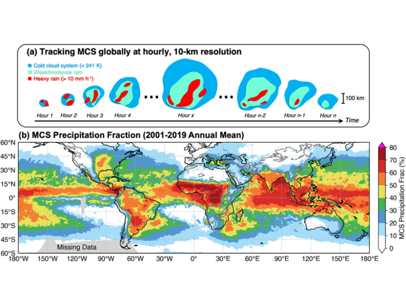
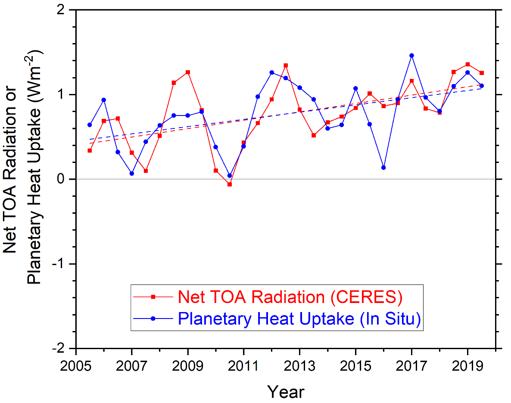
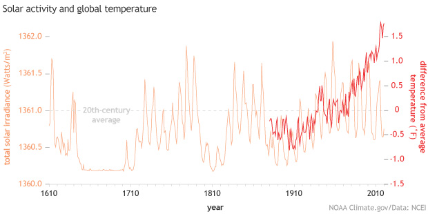
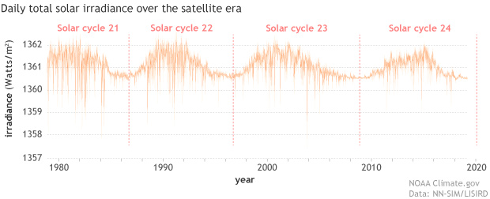
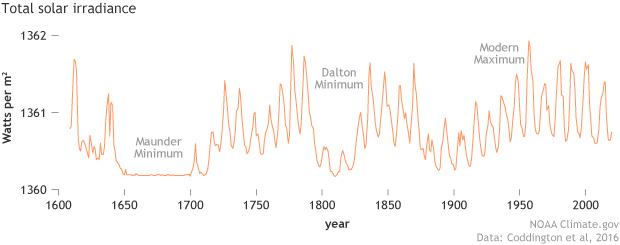
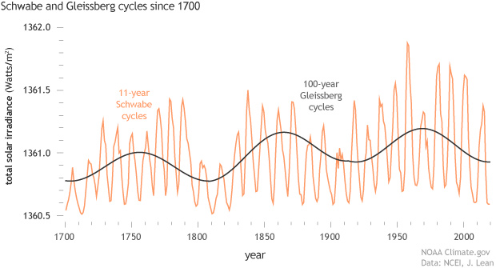
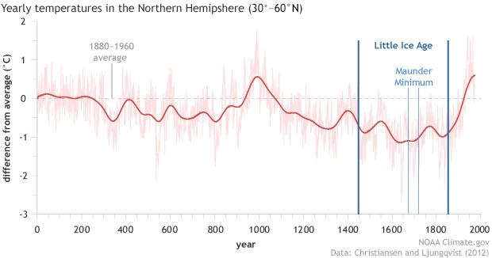
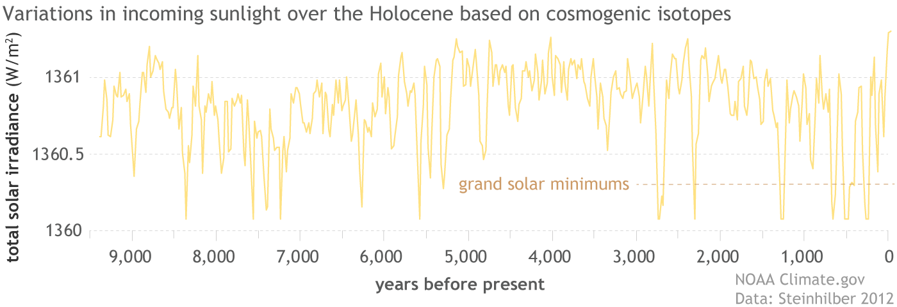
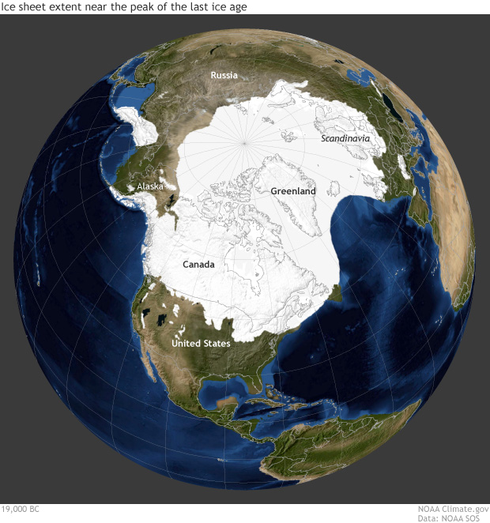
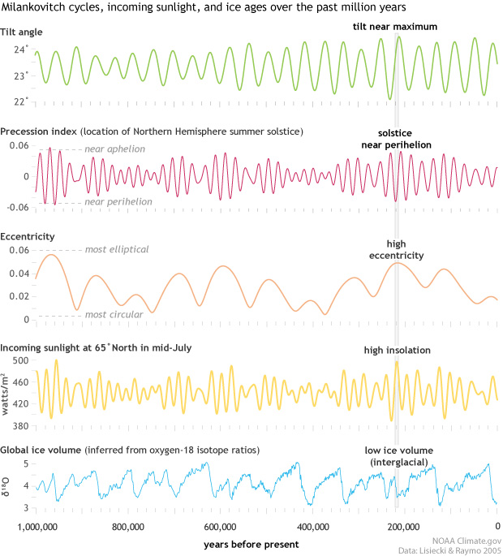

4 Climate System
4.1 Convection
Zhang

Figure: For the first time mesoscale convective systems (MCSs) in both the tropics and midlatitudes and all seasons can be tracked over many years by a new algorithm jointly using satellite observed cloud-top temperature and surface precipitation features at hourly and 10-km resolution globally (top panel). Results show that MCSs account for over 50% of the annual rainfall across the tropics and many regions of the subtropics and midlatitudes (bottom panel).
Mesoscale convective systems (MCSs) are a key component in the Earth’s energy and hydrological cycles. They can grow to hundreds of kilometers in size, last for more than a day, and produce a majority of the annual rainfall in many regions of the world.
Past efforts to develop MCS databases have been limited to the tropics and used methodologies not well tested in the midlatitudes. Feng et al. [2021] developed a new methodology to track MCSs globally using high-resolution satellite observations of both cloud and precipitation. The new method significantly improves the detection of MCSs in the midlatitudes. This new storm tracking database is the first to cover both the tropics and midlatitudes for all seasons.
The study shows that MCSs account for over 50 per cent of the annual rainfall across the tropics and many regions of the subtropics and midlatitudes. Storms over land have more intense convection, while those over oceans produce heavier rainfall and last longer.
This global MCS database supports a broad range of research such as understanding the role of MCSs in global extreme rainfall and circulation, and evaluation of global weather and climate model simulations.
Convective storms of mesoscale dimension are a key component in the Earth’s energy and hydrological cycle. Mesoscale storms grow to hundreds of kilometers in size and can last for more than a day, and produce a majority of the annual rainfall in many regions of the world. Past studies of mesoscale storms have been limited to the tropics and used methodologies not well tested in the midlatitudes. Here, we develop a new methodology to track mesoscale storms globally using high-resolution satellite observations of both cloud and precipitation. The satellite-based storm tracking reproduces important storm statistics derived from ground-based radar observations. Our new method significantly improves the detection of mesoscale storms in the midlatitudes. This new storm tracking database is the first to cover both the tropics and midlatitudes for all seasons. Results show that mesoscale convective storms account for over 50% of annual rainfall across the tropics and many regions of the subtropics and midlatitudes. Storms over land have more intense convection, while those over ocean produce heavier rainfall and last longer. This global mesoscale storms tracking database supports a broad range of applications, such as understanding their role in global extreme rainfall and circulation and evaluation of global weather and climate model simulations.
4.2 Earth Energy Imbalance (EEI)
Loeb Abstarct
Earth’s Energy Imbalance (EEI) is a relatively small (presently ∼0.3%) difference between global mean solar radiation absorbed and thermal infrared radiation emitted to space. EEI is set by natural and anthropogenic climate forcings and the climate system’s response to those forcings. It is also influenced by internal variations within the climate system. Most of EEI warms the ocean; the remainder heats the land, melts ice, and warms the atmosphere. We show that independent satellite and in situ observations each yield statistically indistinguishable decadal increases in EEI from mid-2005 to mid-2019 of 0.50±0.47 W m-2 decade-1 (5%-95% confidence interval). This trend is primarily due to an increase in absorbed solar radiation associated with decreased reflection by clouds and sea-ice and a decrease in outgoing longwave radiation (OLR) due to increases in trace gases and water vapor. These changes combined exceed a positive trend in OLR due to increasing global mean temperatures.

Figure: Comparison of overlapping one-year estimates at 6-month intervals of net top-of-the-atmosphere annual energy flux from the CERES EBAF Ed4.1 product (solid red line) and an in situ observational estimate of uptake of energy by Earth climate system (solid blue line). Dashed lines correspond to least squares linear regression fits to the data
Loeb (2021) Satellite and Ocean Data Reveal Marked Increase in Earth’s Heating Rate (pdf) NASA Guardian
4.2.1 Energy Imbalance Trend (TEEI)
Raghuraman Abstract
The observed trend in Earth’s energy imbalance (TEEI), a measure of the acceleration of heat uptake by the planet, is a fundamental indicator of perturbations to climate. Satellite observations (2001–2020) reveal a significant positive globally-averaged TEEI of 0.38 ± 0.24 \(Wm^{-2} decade^-1\), but the contributing drivers have yet to be understood. Using climate model simulations, we show that it is exceptionally unlikely (<1% probability) that this trend can be explained by internal variability. Instead, TEEI is achieved only upon accounting for the increase in anthropogenic radiative forcing and the associated climate response. TEEI is driven by a large decrease in reflected solar radiation and a small increase in emitted infrared radiation. This is because recent changes in forcing and feedbacks are additive in the solar spectrum, while being nearly offset by each other in the infrared. We conclude that the satellite record provides clear evidence of a human-influenced climate system.
Raghuraman Memo
Earth’s energy imbalance (EEI) is the difference between the incoming solar radiation (S 0 ), and the reflected shortwave radiation (RSW) plus the outgoing longwave radiation (OLR), at the top of the atmosphere. Thus, EEI is a fundamental measure of the degree to which the Earth’s global climate system is out of balance. A trend in EEI measures the acceleration of heat uptake by the planet and hence is an indicator of perturbations to the coupled atmosphere-ocean-land-ice system. The mean EEI during 2005–2015 was estimated to be 0.71 ± 0.10 \(Wm^{-2}\) . Oceans store 90% of this excess heat. Because of this close relationship between EEI and ocean heating, EEI trends have an important bearing on the warming of the global climate system, sea-level rise, and marine health.
In the contemporary climate system, internal variability (ε), effective radiative forcing (ΔERF), and the radiative response (λΔT s ) change EEI. Thus, an anomaly in EEI can be expressed as the sum of these three terms.
\[ΔEEI = ΔERF + λΔT_s+ ε\]
Climate feedbacks and surface temperature are represented by λ and \(T_s\) respectively.
While we know that TEEI is influenced by internal variability in the climate system, external forcings, and climate feedbacks, the extent of the contribution from each has not been previously determined.
In particular, due to the inherent noise in the Earth system, a single observed 20-year time series of EEI is only one of many possible time series that internal variability could produce, and therefore, it is imperative to quantify the contribution of internal variability (ε) to TEEI.
We focus here on the investigation of the trend in EEI (TEEI). In particular, the contributions to TEEI by the drivers of the OLR and RSW trends, are an unexplored and unquantified area in the explanation of the observed satellite record.
We use Coupled Model Intercomparison Project Phase 6 (CMIP6) experiments and design a hierarchy of climate model experiments with the Geophysical Fluid Dynamics Laboratory Coupled/Atmospheric Model 4.0 (GFDL CM4/AM4)to better understand the contributions of the three components of Eq. (1) to the CERES- observed TEEI, thereby providing an assessment of the relative importance of anthropogenically induced changes versus internal variability changes. We show that anthropogenic forcing and the associated climate response yield the observed positive TEEI.
The observed ΔEEI time series yields a significant positive trend of 0.38 ± 0.24 \(Wm^-2 decade^-1\) There is, however, the potential for systematic errors associated with the observed trend due to instrument drift. The trend is driven by large reductions in RSW, compensated only by a relatively weaker increase in OLR.
The observed trend in EEI is unexplained by internal varia- bility. Our hierarchy of modeling experiments allows us to investigate the possible contributions of trends in ΔERF, \(λΔT_s\) , and ε to TEEI. We compose five sets of estimates of the internal variability (ε) using climate model simulations. For all five sets of estimates, we calculate ε as the ±2σ range of 20-year trends across the realizations.
We find that the CERES-observed TEEI lies outside the range of trends driven by internal variability alone.
ε comprises a range of trends in EEI due to internal variability, the value of ε, ±0.19 \(Wm^{-2} decade^−1\)
The satellite-observed positive EEI trend over the 2001–2020 period is exceptionally unlikely (<1% probability) to be explained by internal variability.
Raghuraman (2021) Anthropogenic forcing and response yield observed positive trend in Earth’s energy imbalance (pdf)
NBCnews
Stability in Earth’s climate hinges on a delicate balance between the amount of energy the planet absorbs from the sun and the amount of energy Earth emits back into space. But that equilibrium has been thrown off in recent years — and the imbalance is growing, according to a paper published Wednesday in the journal Nature Communications.
The Princeton University researchers behind the paper found that there’s a less than 1 percent probability that the changes occurred naturally.
The findings undercut a key argument used by people who do not believe human activity is responsible for the bulk of climate change to explain trends in global warming, demonstrating that the planet’s energy imbalance cannot be explained just by Earth’s own natural variations.
4.3 Total Solar Irradiance
Climate.gov: Incoming Sunlight
the Sun likely added at most 0.01 degrees Celsius to the 0.95–1.2 degrees Celsius of global surface warming that’s occurred since pre-industrial times.
Satellite observations through several solar cycles reveal that the difference in total average brightness between solar maxima and minima is very small, on the order of 1 Watt per square meter during strong cycles. On average, the Sun delivers 1,361 Watts of power per square meter at a distance of one astronomical unit. This amount is known as the total solar irradiance. Based on observations and models, experts estimate that the impact of this 11-year variation on global surface temperature is likely around 0.1 degrees Celsius or less.
- The Sun’s overall brightness varies on timescales from minutes to millennia, and these changes are detectable in the global temperature record.
- During strong solar cycles, the Sun’s total average brightness varies by up to 1 Watt per square meter; this variation affects global average temperature by 0.1 degrees Celsius or less.
- Changes in the Sun’s overall brightness since the pre-industrial period have been minimal, likely contributing no more than 0.01 degrees Celsius to the roughly 1 degree of warming that’s occurred over the Industrial period.
- Projected warming due to increasing greenhouse gas levels in the coming decades will overpower even a very strong Grand Solar Minimum.
- Rising amounts of atmospheric carbon dioxide have postponed the next Milankovitch-driven ice age by at least tens of thousands of years.

Figure: Yearly total solar irradiance (orange line) from 1610–2020 and the annual global temperature compared to the 20th-century average (red line) from 1880–2020. Since the middle of the 20th-century, solar activity has declined while global temperature increased rapidly. NOAA Climate.gov image, based on solar data from Coddington et al., 2016, and temperature data from NOAA NCEI.
Even if the Sun’s recent quietness—the 11-year cycle minimum in 2011 was the lowest in a century—were to turn into a multi-decade stretch of extremely low activity known as a Grand Solar Minimum, it wouldn’t overpower the amount of global warming projected for the coming century due to increasing greenhouse gas emissions. In fact, as long as atmospheric carbon dioxide remains above 300 parts per million, not even the next ice age, which Milankovitch theory predicts would begin 50,000 years from now, is likely to occur.

Figure: Daily observations of total solar irradiance (orange line) since the start of the satellite era in 1978. Day-to-day, TSI may vary by as much as 0.3 percent, but average differences between maximum and minimum are on the order 0.1 percent, or around 1 Watt per square meter. NOAA Climate.gov image, based on data from LASP Interactive Solar Irradiance Data Center.
Scientists today have close to four decades of overlapping measurements of total solar irradiance and sunspots, which allow them to statistically describe how changes in sunspot numbers relate to variations in total solar irradiance. They’ve used that relationship to model the Sun’s brightness back to the start of the sunspot record in the 1600s.

Figure: Total solar irradiance estimated from sunspot observations since 1610. NOAA Climate.gov image, based on the NOAA TSI Climate Data Record (Coddington et al., 2016).
These historical reconstructions reveal that some solar cycles are more active than others, and that their timing isn’t completely random. Generally, 2-3 relatively strong cycles will be preceded and followed by 2-3 relatively weak ones. These alternating strong and weak epochs tend to be grouped together over approximately 100-year periods, a pattern known as Gleissberg cycles. Over the span of the historical sunspot record, there have been three ~100-year Gleissberg cycles: 1700-1810, 1810-1910, and 1910-2010.

Figure: The amplitude of the 11-year solar cycle (formally called the Schwabe cycle, orange) is modulated by the approximately 100-year Gleissberg cycle (charcoal), in which a number of consecutive cycles of high activity are bracketed by consecutive cycles of lower activity. The start of the Industrial Revolution in the mid-1700s coincided with a Gleissberg maximum. The relatively high activity of the mid 20th-century also coincided with a Gleissberg maximum, while the recent decades coincide with a Gleissberg minimum. NOAA Climate.gov image based on data from Wang and Lean, 2021.
In addition, the record shows that there have been periods when sunspots virtually disappear for several decades. (Other features of the 11-year solar cycle continue to occur, however.) These periods are called Grand Solar Minimums. For example, between 1645-1715, the Sun went through a 70-year quiet period known as the Maunder Minimum. Sunspots disappeared almost completely, and the solar wind was maybe half of its modern velocity. The Maunder Minimum partially overlapped a centuries-long cold spell called the Little Ice Age, which was strongest in the Northern Hemisphere between 1450-1850.

Figure: A 2000-year temperature history of the Northern Hemisphere outside the tropics shows a warm period that peaked around 1,000 A.D. followed by a multi-century period of cooling: the Little Ice Age. The coldest part of the Little Ice Age overlapped the very low solar activity of the Maunder Minimum, but the cold spell began well before. NOAA Climate.gov graph, based on data from Christiansen and Ljungqvist, 2012.
In contrast, the Sun was unusually active in the twentieth century, a period which solar experts call the Modern Maximum. Starting near the turn of the twentieth century, each solar cycle was increasingly active. This build up was tied to the last Gleissberg Cycle, which peaked during solar cycle 19 in 1957. Solar activity then declined in the second half of the 20th-century. The stretch of high activity drew to a definite close in the first decade of the twenty-first century with solar cycle 23, which had an unusually long and low minimum. Solar cycle 24 went on to have one of the lowest maximums of the last 70 years, and solar cycle 25 is expected to be comparable. Meanwhile, Earth’s surface temperatures continued to rise rapidly.
The increasing solar activity of the first half of the 20th century and the decreasing activity since then have largely canceled each other out in terms of their influence on global temperature.
The modern sunspot record tells us about solar activity over the past four centuries. Indirect evidence for solar activity deeper in the past comes from the presence of cosmogenic isotopes—radioactive atoms that are generated when common isotopes of an element are struck by galactic cosmic rays.
Our solar system is constantly bombarded with galactic cosmic rays, but the Sun’s magnetic field shields us from most of them. When the Sun’s magnetic field is strong, at solar maximum, fewer cosmic rays reach the atmosphere, creating very few cosmogenic isotopes. At solar minimum, when the Sun’s magnetic field is weaker, slightly more cosmic rays reach Earth’s atmosphere, generating more cosmogenic isotopes. The two most common cosmogenic isotopes are carbon-14, which can be found in tree rings, and beryllium-10, which is found in ice cores. Using fluctuations in cosmogenic isotopes, experts have reconstructed solar activity back thousands of years.

Figure: A reconstruction of total solar irradiance over the past 9,400 years based on a combination of carbon-14 isotopes in tree rings and beryllium-10 in ice cores. The record indicates there have been at least 25 Grand Solar Minimums in the Holocene. NOAA Climate.gov image, based on data from Steinhilber et al., 2012.
These paleoclimate reconstructions reveal that the Sun has produced at least 25 grand minimums in the past 9,000 years. Some are short—just two or three decades—and others, like the Maunder Minimum, are five or more decades. They occur every 200 years or so, a period known as the de Vries cycle. Many of them were preceded by a solar cycle with an unusually long and low solar minimum, similar to the minimum of 2008.
Milankovitch cycles and ice ages
The 11-year sunspot cycle and its Gleissberg-cycle modulation cause small changes in the Sun’s actual brightness—how much sunlight the Sun radiates to Earth. Earth’s climate is also affected by how much sunlight reaches us due to changes in our planet’s orbit and position in space relative to the Sun. Called Milankovitch cycles, these predictable orbital patterns have repeat times of tens to hundreds of thousands of years.
For the past million years at least, Milankovitch cycles have coincided with 100,000-year-long ice ages punctuated by short intervals of rapid warming. Although there are pieces of the puzzle experts still don’t understand, the key climate influence seems to be changes in the amount of incoming sunlight, or insolation, reaching the high latitudes of the Northern Hemisphere during the summer. The Northern Hemisphere is key to the ice ages because massive ice sheets can only grow over land, not ocean, and most of Earth’s land area has been concentrated in the Northern Hemisphere for at least tens of millions of years.

Figure: Changes in Northern Hemisphere sunlight are the key to ice ages because massive ice sheets, such as the one that spread across North America and Eurasia roughly 20,000 years ago, can only grow over land, and most land area has been in the Northern Hemisphere for tens of millions of years. (High-resolution without annotations available.) Image by Climate.gov based on data from Science on a Sphere.
The most significant changes in Northern Hemisphere insolation come from three variations in Earth’s orbit:
precession (~26,000 years): the slow rotation or “wobble” in the Earth’s axis of rotation, which changes where in the annual orbital path Northern Hemisphere summer solstice occurs;
obliquity (~41,000 years): how tilted Earth’s axis of rotation is;
eccentricity (~100,000 years): how far Earth’s orbit is from being a perfect circle.Because these cycles have different lengths, they overlap in complex rhythms, reinforcing one another at some times and offsetting one other at others. Northern Hemisphere summer insolation is maximized when tilt is extreme, eccentricity is extreme, and precession causes Northern Hemisphere summer solstice to occur near perihelion, the place in its orbit when Earth is closest to the Sun. Summer insolation is minimized when tilt is smaller, eccentricity is extreme, and Northern Hemisphere summer solstice occurs near aphelion, when Earth is farthest from the Sun.

Figure: Rows 1-3) Milankovitch cycles over the past million years (tilt, precession, and eccentricity. (Row 4) Northern Hemisphere summer insolation. (Row 5) Global ice volume inferred from oxygen isotopes in sea floor sediments. Light gray column highlights conditions around 220,000 years ago, when overlap among the three orbital cycles brought a peak in Northern Hemisphere insolation, triggering a warming period with low ice sheet volume. NOAA Climate.gov image, based on data from Lisiecki and Raymo, 2005.
How low summer insolation must fall to trigger an ice age depends on how high atmospheric carbon dioxide levels are; the more carbon dioxide, the lower the insolation must be. Looking back over the past million years, the highest carbon dioxide level at the start of any ice age was 300 ppm, and most were far lower.
At pre-industrial carbon dioxide levels, summer insolation at 65° North need only dip 0.75 standard deviations below the mean—about 15 Watts per square meter—for summers to be too cool to melt all the winter snow, a low that Milankovitch cycles predict we will next hit about 50,000 years from now. At 400 parts per million, summer insolation would need to fall twice as much—a low we will next see 125,000 years from now. At carbon dioxide levels above 560 parts per million no Milankovitch variation within the next half million years will be low enough to trigger an ice age.
Climate.gov: Incoming Sunlight
Danish ISAC Study
Conclusions
The Sun - Sunspot number catches only part of solar activity - The Sun’s magnetic field drives short term changes - Use therefore magnetic data for Sun-Climate studies - Solar output predictability is at most years ahead - Due to the complexity and time-varying nature of the Sun solar-climate coupling must be expected to be very complex and probably changing with time
The total solar irradiance (TSI) is in a sense the most obvious solar parameter to single out for study when considering the Sun-climate connection. The power input received by the Earth from the Sun is the driver of Earth’s climate system and the variations in TSI do correlate reasonably well with the variations seen in the climate. However, the brute variations in power received at Earth are not strong enough to explain the variations in climate that are observed. For TSI to be the driver of the climate variations observed some sort of amplification or feedback mechanism must therefore be in place.
The influence of TSI on the climate is multifaceted. Variations in TSI translate to different heating in various layers of the atmosphere (though UV here plays the major role), heat absorption in the oceans with different time scales from those of the atmosphere, differential heating over land and oceans, etc. These primary influences from TSI will in turn alter such things as atmospheric circulation, water vapour content in the atmosphere, and cloud cover. Effects from these secondary phenomena may then feed back into the energy absorbed by the climate system from solar irradiation, for example via changes in the Albedo, possibly enhancing the effects of TSI variations. Due to the geographically heterogeneous nature of solar influence on climate and the rather complicated feedback mechanisms involved in solar forcing of the climate any simple explanation of TSI-climate connections is likely to fail, except in limited cases such as variations in sea surface temperature that seem to be at least partly explainable by simple energy balance considerations.
Danish national Space Center (2007) Influence of Solar Activity Cucles on Earth’s Climate (pdf) Presentation (pdf)
4.4 Spatial Shock
4.4.1 Coastal Flooding
Desmet
Just moving to higher grounds
Nobel Prize winner William Nordhaus has called climate change “the ultimate challenge for economics.”
Economists increasingly have been trying to understand how rising tides and global temperatures will impact resource allocation around the globe, as well as the potential policy tools that can help curb damage to our natural world.
SMU professor Klaus Desmet says that a lot of those analyses are missing a critical factor: migration.
Desmet coauthored a paper in the American Economic JournalEvaluating the Economic Cost of Coastal Flooding (paywall): Macroeconomics that examines how economic output will be affected over the next 200 years as humans move away from coastal areas threatened by rising sea levels. Although losses in vulnerable Southeast Asian cities such as Bangkok and Shanghai will still be very significant, their research shows that overall GDP declines are substantially less than predicted by models that don’t account for spatial shifts in economic activity.
Climate change is to a large extent a spatial shock.
Migration as one of the key responses to climate change.
What we find in our model is that at a global level, flooding decreases real GDP by about 0.1 percent by the year 2200. If we were to completely ignore the dynamic spatial response of the economy, if we were to have everyone stay put in the face of rising seas, then the loss would actually increase to 4.5 percent. So, that difference between 0.1 and 4.5 percent underscores the first-order importance of taking into account moving, migration, and the spatial dynamic response of the economy to rising sea levels.
We develop a high resolution dynamic model of the world economy. This model splits up the world into 64,800 1° by 1° grid cells, which are linked to each other through trade and migration. We feed into this model high-quality projections of both global and local sea level rise over the next 200 years. . . . When we run our model forward, we can then assess what the economic effect will be of having these pieces of land lost for production.
We find large losses in coastal areas of south and east Asia, with countries such as Vietnam, Thailand, and Bangladesh losing up to 10 percent of real GDP in present discounted value terms over the next 200 years. Other areas that will also suffer disproportionately include coastal Northwest Europe, [and] some areas on the US East Coast and Gulf Coast. By contrast, the Pacific Coast of the Americas is much less affected and, in fact, most of the coastal areas of Africa are also a lot less affected.